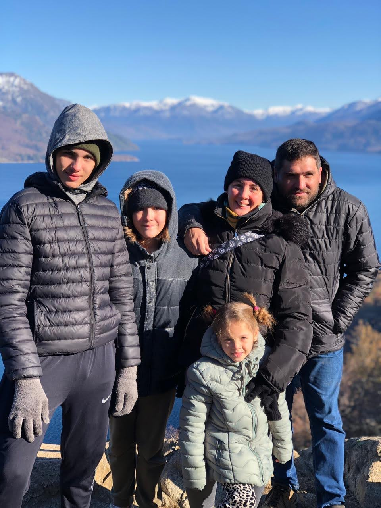
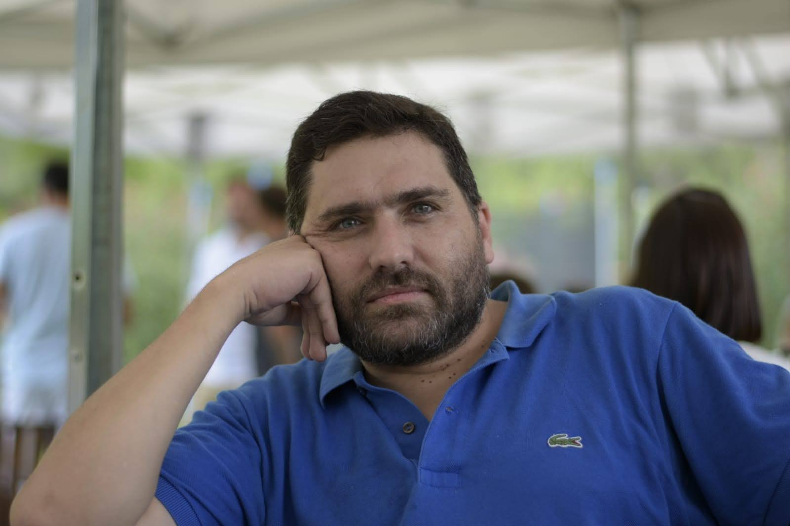
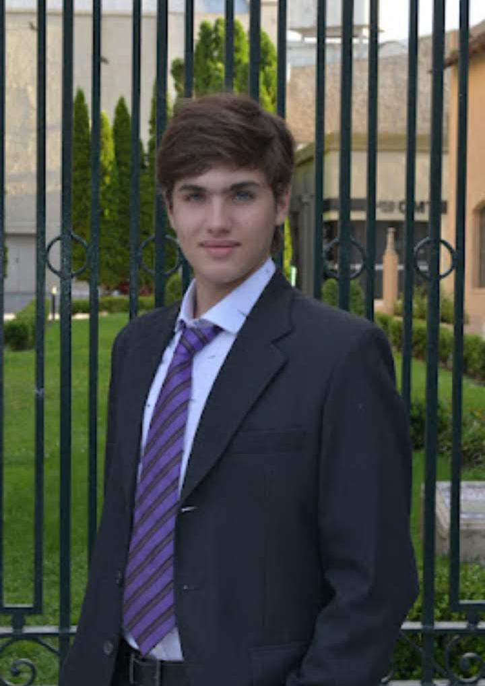
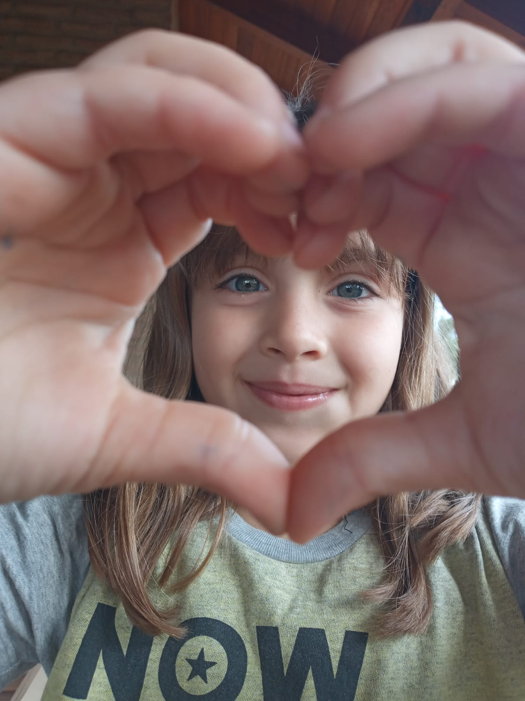

QUIEN SOY
Mi nombre es Andrea Carnevale. Tengo 47 años y naci en Tandil.
Mis padres se llaman Mirta y Hugo y tengo un hermano mayor llamado Pablo.
Egrese de la escuela primaria en 1990, de la secundaria en 1995 y pase por dos carreras universitarias sin terminar ninguna. En el 2007 luego de un año de estudio en el INTA me recibi de Perito Clasificador de Granos y Oleaginosas, ya estando casada y con un hijo.
En 1998 conoci a Fabio, quien mas tarde seria mi esposo, y luego de 4 años y medio de noviazgo y 1 año y medio de convivencia, el 16 de abril de 2004 nos casamos.
Actualmente llevamos 20 años de casados y tenemos 3 hijos: Octavio, Pilar y Helena.
ESTA ES MI FAMILIA
SUS INTEGRANTES
Fabio
Fabio tiene 50 años, nacio en Laprida el 6 de octubre de 1974 y vive en Tandil desde 1992.
Es analista programador y trabaja para una empresa de Buenos Aires.
Los fines de semana le gusta salir a endurear por las sierras tandilenses con amigos.
Octavio
Octavio nacio el domingo 30 de abril de 2006. Tiene 18 años.
Actualmente asiste a la escuela Granja de Tandil, está en el último año y planea ingresas a la Facultad de Ciencias Exactas de la UNICEN el proximo año.
Pilar
Pilar nacio el jueves 2 de diciembre de 2010. Cumple 14 años dentro de un mes.
Cursa el segundo año de secundaria en la Escuela Tecnica 3.
Helena
Helena nacio el sabado 10 de diciembre de 2016. El proximo mes cumple 8 años.
Esta terminando el segundo grado en la escuela primaria Nro. 42.